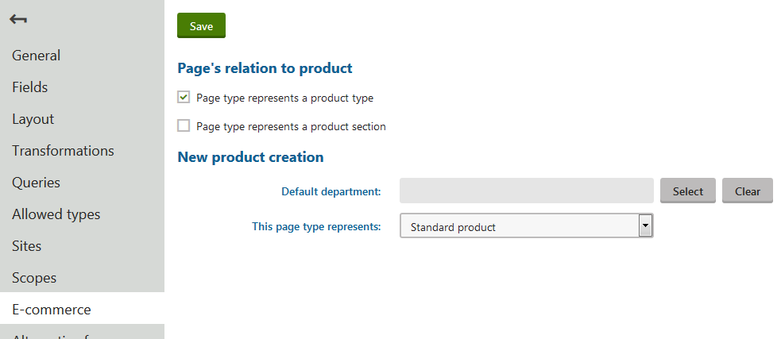

Configuring product page types
In the Kentico E-commerce Solution, product types are fully customizable page types used to create products of multiple representations. Specifically, they define the structure of pages that are associated with SKU (product) objects. Product types allow you to present products and services to your on-line store customers on the live site. Same as any other page type, each product type can have its own:
Fields (data structure)
Editing form layout
Transformations (design)
Queries
And other properties.
Apart from product page types, there are also product section types. They work the same way as the Page (menu item) section type when creating a new page. With product section types (or page menu items), you can easily define the structure of your on-line store (product sections tree). You can split up your on-line store into multiple parts, creating a store hierarchy.
In the product sections tree in the Products application, the system displays only page types designated as product page types, product section types and page menu items.
Creating product page types
To create a new product page type:
Open the Page types application.
Click New page type.
This redirects you to the page type wizard, which will guide you through the steps to create a new page type.
If your website is developed with the MVC framework (ask your developers), you need to create a content only page type.
Switch to the E-commerce tab of the new page type and select the Page type represents a product type field in the Page's relation to product section.

Editing a product type(Optional) In the Default department field of the New product creation section, you can select a department which is preselected when creating a new product of this type (however, the value can be changed).
You can use this setting, for example, when you want to assign taxes to products automatically. The system preselects the department automatically and you do not need to select it by yourself.
(Optional) In This page type represents, you can select which type of products the product page type represents. The value is then preselected when creating a new product of this type (however, the value can be changed).
Click Save.
The system creates a new product page type. When you create a new product, you can choose the created page type to represent the product.
Product page types are in other cases the same as the page types. See Page types for further details.
Configuring product page types
Limiting the pages users can create
You can set page types that can be used for child pages of a page of a specific page type.
You can also set page types that can be used for child pages based on the product tree structure of your online store. See more information in the next configuration step, Configuring product structure.
To limit child pages according to the used page type:
Open the Page type application.
Edit (
 ) a product page type.
) a product page type.Switch to the Allowed types tab.
Click Add page types.
In the Select page types dialog, select all page types that you want to allow.
Click Select.
The system saves the selection and users will be able to use only the selected page types when creating a new page of the modified product page type.
There is also an option of setting parent page types.
To see more information about both child and parent page types, see Limiting the pages users can create.
Modifying and removing product page types
For modifying and removing product page types, use the same process as with modifying or removing page types.
Working with product section types
The Page (menu item) section type is available with the system's installation, and is offered by default while defining the structure of your on-line store. You can also set up your own section types.
Product sections allow you to define the structure of your on-line store (product sections tree). You can split up your on-line store into multiple parts, creating a store hierarchy. For example, under Products -> Computers you can create a Tablets section containing only tablets.
Tip: Product sections can be used to define the scope of Catalog discounts, Product coupons, and Buy X Get Y discounts.
Creating section types
To add a new section type:
Open the Page types application.
Click New page type.
This redirects you to the page type wizard, which will guide you through the steps to create a new page type.
Switch to the E-commerce tab of the new page type and select the Page type represents a product section field in the Page's relation to product section.
Click Save.
The system create a new section type which you can now use for creating hierarchy of your on-line store.
Modifying and removing section types
For modifying and removing product section types, use the same process as with modifying or removing page types.